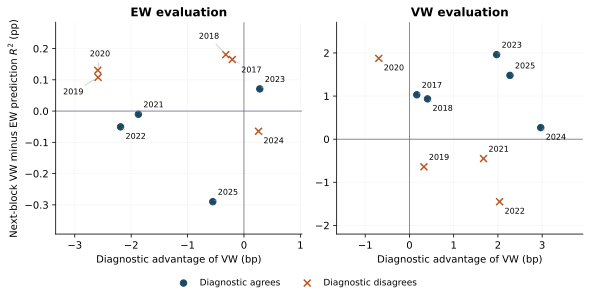

palette = ({
naipca_iab: "#18557f", complete: "#18557f",
qz_ipca: "#8a6a1a",
ipca: "#6f9cc0", rp_pca: "#7a7a7a", ff5: "#b3b3b3",
naipca_beta_only: "#8a8378", beta_only: "#8a8378",
band: "rgba(0,0,0,0.06)", muted: "rgba(0,0,0,0.6)", rule: "rgba(0,0,0,0.1)"
})
LANG = (document.documentElement.lang || "en").startsWith("zh") ? "zh" : "en"
STR = ({ en: { view: "View", cost: "Cost (bp per traded dollar)", universe: "Universe", sample: "Sample (months)", log: "Log scale", models: "Models", statistic: "Statistic", theme: "Theme", sort: "Sort by", method: "Method", scenario: "Scenario", block: "Block (months)", metric: "Metric", intervals: "Intervals", cost_bp: "One-way cost (bp)", failed: "Interactive data failed to load. The static figure is shown instead." },
zh: { view: "视图", cost: "成本（每交易一美元，基点）", universe: "股票池", sample: "样本（月）", log: "对数坐标", models: "模型", statistic: "统计量", theme: "主题", sort: "排序", method: "方法", scenario: "情景", block: "块长（月）", metric: "指标", intervals: "区间", cost_bp: "单边成本（基点）", failed: "交互数据加载失败，改为显示静态图。" } })
t = (k) => STR[LANG][k] ?? STR.en[k] ?? k
fmt2 = (x) => (x == null || Number.isNaN(x)) ? "n/a" : x.toFixed(2)
fmt1 = (x) => (x == null || Number.isNaN(x)) ? "n/a" : x.toFixed(1)
fmtBp = (x) => (x == null || Number.isNaN(x)) ? "> 500" : `${Math.round(x)} bp`
parseMonth = (s) => new Date(`${s}-01T00:00:00Z`)
// Sharpe, annualised, sample std (ddof = 1): matches the release convention
sharpe = (r) => {
const n = r.length, m = r.reduce((a, b) => a + b, 0) / n
const v = r.reduce((a, b) => a + (b - m) ** 2, 0) / (n - 1)
const vol = Math.sqrt(v) * Math.sqrt(12)
return vol > 1e-12 ? (m * 12) / vol : NaN
}
netSeries = (r, to, bp) => r.map((x, i) => x - to[i] * bp / 1e4)
wealthPath = (r) => { let w = 1; return r.map((x) => (w *= 1 + x)) }
nberMarks = (nber) => Plot.rectX(nber, { x1: (d) => parseMonth(d.start), x2: (d) => parseMonth(d.end), fill: palette.band })Interpreting Estimated Pricing Errors: Evidence from Characteristic-Based Return Forecasts
When one model reports a smaller alpha, did its factors explain more, or did the thing being explained change? And does alpha size help anyone choose or improve a return forecast?
Working paper · September 2026 · 62 pages · not yet posted to SSRN
A model’s estimate of each stock’s expected return, its forecast, splits into the part its factors can produce and a leftover, the alpha (an estimated pricing error). Three questions, three answers. Why is one model’s alpha smaller than another’s? Mostly because it explains a different expected-return estimate. On 153 U.S. stock characteristics, one model is fitted twice, once counting every stock equally and once weighting by market value; with every stock scored equally, their own alphas are about 117 and 77 basis points (bp; 1 bp = 0.01 percentage point) a month. Given the second’s factors, the first model’s leftover stays at about 117; given the second’s estimate, it falls to 75 (Table 1, p. 13). Does alpha size help pick a forecast? Little. Does turning the alpha part of a forecast down help? Sometimes, depending on the benchmark and the training window.
1 The question
In the agenda, this paper follows Characteristic-Space Metrics and asks: if the ruler (see the box below) can move returns between factors and the intercept (the part of expected return no factor explains), what does a smaller alpha mean? The next paper, Characteristic Geometry, moves from reading the model to acting on it: can the ruler change the portfolio even when the forecast does not change?
If a new model leaves less expected return unexplained, is that because its factors are better, or because it is explaining a different estimate of expected returns? And does the size of that leftover help anyone choose or improve a return forecast?
A characteristic model issues an estimate of every stock’s expected return, its forecast, directly from the stock’s characteristics. Separately, its factors define which return patterns count as explained. The forecast therefore splits into a part the factors can produce and a leftover, the alpha component (Section 2.3, p. 7). The paper fits the same model twice, under two sets of training weights (how a model is fitted): once counting every stock equally (the equal-weighted model) and once weighting stocks by market value (the value-weighted model).
The ruler, and why it stays fixed here. To say how much of a stock’s expected return each driver explains, a model must first decide when two combinations of characteristics are really different, and how large each one is. The rule it uses for that is the ruler. Give each characteristic a weight and add them up: every stock gets a score. Such a weighted combination is called a direction (it is not a portfolio). The plain ruler (the Euclidean or identity metric) judges a direction by its weights alone. The characteristic ruler (the Gram metric) judges it by the scores it gives real stocks: how large they typically are, and whether two directions’ scores line up across stocks. The ruler is the convention a model uses to measure how large a direction is and how much two directions overlap. Two value signals that pick out the same cheap stocks count as overlapping under the characteristic ruler but as unrelated under the plain ruler.
The ruler also turns each leftover into a size in basis points. Both alphas here are scored with the same ruler, on the same stocks and with the same scoring weights (how every leftover is measured: every stock equal, or weighted by market value). For the headline crossing, the ruler is the characteristic ruler averaged month by month over the full sample, July 1963–November 2025 (Table 1, p. 13); the annual selection tests use the average of the preceding 60 months instead (Section 3.3, p. 10). Either way it measures signal size, not portfolio risk (p. 6). The paper holds this ruler fixed, as a fair comparison must: what differs between the two models is the target being explained, not the ruler.
2 Why it matters
A smaller alpha is often offered as evidence that a new model’s factors are better. If the gap instead comes from a different estimate of expected returns, the evidence is about that estimate, not the factors (p. 2). A model builder should therefore ask: smaller relative to which estimate? A team choosing a forecast can test that choice, and how much of the alpha component to keep, on later returns.
3 The argument at a glance
- Split. A smaller alpha can mean better factors or a different estimate. → The framework
- Problem. Comparing two models’ own alphas mixes the two reasons. → Why it matters
- Design. Cross each model’s estimate with each model’s factors, under one ruler. → A simple example
- Finding 1. Swapping only the factors barely moves the leftover; swapping only the estimate closes the gap. → Table 1
- Finding 2. Picking the model with the smaller alpha each year adds little to next year’s accuracy. → Figure 2
- Finding 3. Turning the alpha component down gives more accurate forecasts than keeping it whole in 20 of 24 test settings, and than simple averaging in only 8. → Figure 3
- Boundary. Find out what changed, then test each use against simple alternatives; the evidence is exploratory, not a test of zero alpha or a trading result. → Scope
4 The framework
The starting point is the pricing error \alpha_t = \mu_t - \beta_t \lambda_t: expected excess returns \mu_t minus what factor exposures \beta_t and risk prices \lambda_t account for (equation 1, p. 5). It is measured in percent per month. It is an expected quantity, not the noise in realised returns, and a nonzero value is not by itself proof of mispricing.
The empirical model is a characteristic-based factor model in the style of instrumented principal component analysis (IPCA) (Kelly et al. 2019): characteristics set each stock’s loadings on a few hidden factors through a loading matrix B, and its intercept through a separate coefficient vector a (equation 2, p. 5). In symbols, with \hat h the model’s expected-return coefficients:
\begin{aligned} \hat h &= \underbrace{P_Q(B)\,\hat h}_{p:\ \text{factor part}} + \underbrace{[I - P_Q(B)]\,\hat h}_{r:\ \text{alpha component}},\\ h(\eta) &= p + \eta\, r,\qquad \eta \in [0,1]. \end{aligned}
The second line keeps all of p and a fraction \eta of r (equation 14, p. 21): \eta = 1 is the complete forecast, \eta = 0 the factor part alone.
For specialists: the projection and the ruler
If the factors’ averages are set to absorb everything the factors can reproduce, then r, the part left outside, is exactly the model’s fitted characteristic alpha (equation 6, p. 7). P_Q(B) = B(B'QB)^{-1}B'Q projects onto the loading space, the return signals the model’s exposures can generate. Q, the characteristic Gram matrix with equal-stock or capitalisation weights, makes b'Qb measure how differently two coefficient vectors forecast the stocks studied (equations 3 to 5, p. 6). In the crossing, each pairing gets the factor averages best suited to its target (p. 7).
5 A simple example
Two tailors each report how badly their pattern fits. Tailor B reports a smaller misfit, but B was fitting a client with a more standard figure, whom almost any pattern fits well. To compare the patterns, try each pattern on each client; this is the paper’s 2×2 crossing. On A’s client the two patterns fit about equally well (117.37 against 116.67 bp); on B’s client even A’s pattern misfits by only 75.02 bp (Table 1, p. 13). Here the pattern is a model’s factors, the client is the expected-return estimate, and the misfit is the alpha. Nobody sees the real client: both “clients” are estimates of unobserved expected returns, so the crossing shows which ingredient changed, not which estimate is right; later returns are needed for that.
Try this. Model A’s estimate contains a stock-specific tilt that its factor cannot produce; the two sliders change Model B. The toy opens on Story 1; click Reset, then each story, and watch the top-right and bottom-left cells.
Figure 1: Two models, two alphas. Five stocks, one factor; the table tries each model’s estimate against each model’s factor.
How to read it. Each bar is a stock’s expected-return estimate, split into the factor part (blue) and the alpha component (gold); dots mark the total. In the table (bp a month), bold cells are each model’s own alpha. Source: illustrative numbers, not the paper’s data; the layout follows the paper’s Table 1.
What to notice. Compared with Reset, B’s own alpha (bottom-right) shrinks in both stories. In Story 1 the top-right cell drops: B’s estimate is easier for any factor to explain. In Story 2 the bottom-left cell drops: B’s factor explains A’s estimate better. Only the crossing tells you which story you are in. In the paper’s data, the real table looks like Story 1 (Table 1, p. 13). If you drag the sliders, B’s own alpha is not monotone: it hits zero when B’s factor bends exactly as far as B’s estimate keeps the tilt, and rises again beyond that. The toy has one factor and five equally weighted stocks; the paper’s crossing uses three factors and the U.S. cross-section.
6 Design and main results
The data are the U.S. stock panel associated with the characteristic library of Jensen et al. (2023): 153 characteristics, July 1963 to November 2025 (Section 3.1, p. 8). The target is next month’s excess return, clipped at the monthly 1st and 99th percentiles. Forecasts are issued each March from 2017 to 2025 (nine forecast dates, called origins) for the 105 months from April 2017 to December 2025, always from earlier data (Section 3.2, pp. 9–10). Accuracy is prediction R^2: how much a forecast cuts squared error compared with always predicting zero (equation 11, p. 11).
1. Why is one alpha smaller?
Table 1: Crossing each model’s expected-return estimate with each model’s factors. Size of the leftover under the full-sample characteristic ruler (root mean square across stocks), bp a month; equal-stock scoring; three factors (Table 1, p. 13).
| Factors estimated with | Estimate from equal-weighted training | Estimate from value-weighted training |
|---|---|---|
| Equal-weighted training | 117.37 | 75.02 |
| Value-weighted training | 116.67 | 77.27 |
How to read it. Bold cells are each model’s own alpha; the other two show how closely one model’s factors reproduce the other’s estimate. Reading down a column changes only the factors; across a row, only the estimate. If better factors were the reason for the gap between the bold cells, the left column would close most of it; if a different estimate were, the top row would.
What this shows. Same estimate, different factors: the leftover barely moves (117.37 to 116.67 bp). Same factors, different estimate: it falls to 75.02 bp (Table 1, p. 13). A symmetric split of the squared gap gives about 101% to the change of estimate and −1% to the change of factors. The −1% is a small offset: on the value-weighted estimate, the equal-weighted model’s factors leave slightly less (75.02 against 77.27 bp). Under capitalisation-weighted scoring the split is 98% and 2% (p. 13). These shares describe sizes, not causal effects.
2. Does alpha size help pick a forecast? The rule tested: at each origin, issue the forecast of the model with the smaller historical leftover, then check next year’s accuracy (Section 5.1, p. 17). Judged on each model’s own estimate, the value-weighted model always has the smaller alpha, so the rule picks it every year and is no more informative than always picking that model. A fairer version judges both models’ factors against one common estimate: a ridge regression of returns on characteristics (coefficients pulled towards zero), fitted to the same history (pp. 10–11). The amount by which the value-weighted model’s leftover is smaller against this estimate is its diagnostic advantage.
Figure 2: Diagnostic advantage and later forecast differences. Nine annual origins, common ridge estimate, preceding-60-month characteristic ruler (Figure 2, p. 18).

How to read it. Right of zero, the diagnostic advantage favours the value-weighted (VW) model; above zero, that model then forecast better. Dots in the top-right or bottom-left quadrants are correct calls; crosses are wrong ones. EW marks equal-stock weights. Source: Interpreting Estimated Pricing Errors, working paper, September 2026, Figure 2; figure file diagnostic_margins.pdf from the paper source.
What this shows. Similar diagnostic advantages come before opposite outcomes. Under capitalisation-weighted scoring, the diagnostic favours the value-weighted model by about 2.04 bp at the 2022 origin, yet that model’s prediction R^2 then trails by 1.45 percentage points; at 2023 a similar advantage (1.97 bp) comes before a gain of 1.96 points. Balanced accuracy (the average hit rate across the years won by each model) is 47.5% under equal-stock scoring and 41.7% under capitalisation-weighted scoring, below the 50% of always choosing one model (p. 18).
Forecast accuracy of each rule on a common horizon. Prediction R^2 in percent (larger is better), 105 months, April 2017 to December 2025 (Table 3, p. 19).
| Forecast rule | Equal-stock scoring | Capitalisation-weighted scoring |
|---|---|---|
| Equal-weighted-trained model | 0.3605 | 0.5678 |
| Value-weighted-trained model | 0.3788 | 1.0491 |
| Selector using the common ridge estimate | 0.3612 | 0.7326 |
| Simple average of the two models’ forecasts | 0.4396 | 0.9569 |
| Pooled ridge | 0.3972 | 0.8550 |
How to read it. Each year the selector issues one of the two factor models’ forecasts; pooled ridge fits one ridge regression of returns on characteristics and bypasses the factor model.
What this shows. In the main specification, choosing by alpha size against the common estimate gives less accurate forecasts than simply averaging the two models under both scoring weights: under equal-stock scoring, the selector’s prediction R^2 is 0.3612%, against 0.4396% (Table 3, p. 19); across the 12 decision sequences of the wider grid it beats the average in only 5 (p. 20). Averaging is hard to beat, though not always best. Under squared loss, its loss is below the mean of the two component losses by a quarter of their squared disagreement (equation 13, p. 20). With the characteristic ruler averaged over the whole training window instead of the preceding 60 months, the selector picks correctly in 6 of 9 years instead of 4 under equal-stock scoring, yet its prediction R^2 (0.3847%) still trails the average (p. 20).
3. Does turning the alpha component down help? The fraction \eta of one model’s alpha component to keep is learned from the previous twelve months of completed forecasts, kept between 0 and 1, and applied to the next year (Section 6.2, p. 22). Figure 3 compares this rule with four baselines (Baseline menu): keeping the component whole; simple averaging; a principal-component (PC) version, which splits the same estimate along the combinations of characteristics that vary most across stocks instead of the model’s factors; and scaling the whole forecast by one learned fraction.
Figure 3: Turning the alpha component down, against a chosen baseline. Gain in prediction R^2, percentage points, 24 test settings, 93 months (Table G.1, p. 55).
How to read it. Each row is one test setting: training window (expanding, or rolling 240 months), number of factors K, then training weights / scoring weights (EW equal-stock, VW capitalisation-weighted). Blue bars favour turning the component down; orange bars favour the baseline. Larger dots mark VW/VW. Source: Interpreting Estimated Pricing Errors, working paper, September 2026, Table G.1 and the abstract counts; paper source files challenge_grid.tex and challenge_numbers.tex. Data · PNG

What this shows. Turning the alpha component down gives more accurate forecasts than keeping it all in 20 of 24 test settings, but more accurate than a simple average of the two models’ forecasts in only 8, and than the PC version in only 6 (abstract; Table G.1, p. 55). Under capitalisation-weighted training and evaluation, the edge over averaging is positive with expanding training windows and negative with rolling ones (p. 25). The component can carry useful forecast information, but more accurate forecasts do not show that it reflects priced risk (p. 26).
7 How it relates to prior work
| Prior work | What it established | What this paper adds |
|---|---|---|
| Kelly et al. (2019) | Characteristics set each stock’s factor loadings; an intercept captures characteristic-linked return not due to factor exposure. | Asks what a change in the fitted intercept’s size reflects. |
| Zhang (2024) | Tests of pricing errors in models “with latent factors and firm characteristics as covariances”. | Not a new test; a matched comparison of fitted objects and their forecast use. |
| Choi and Yuan (2025) | Estimation and inference for “inside” and “outside” alphas, with debiasing. | A different question: what a reported fall in a fitted alpha reflects; no ranking against these estimators (p. 59). |
| Kozak et al. (2020) | Shrinking a stochastic discount factor over many characteristic portfolios works well out of sample. | Uses ridge as a benchmark; treats keeping part of the alpha component as a separate shrinkage decision. |
The tools (projections, ridge regression and forecast averaging) are known; what is new is one matched design that separates the three questions above on the same stocks, dates and loss. In short: mostly a different estimate; little; sometimes. Unfavourable settings and window reversals are reported alongside the favourable ones.
This paper cites Characteristic-Space Metrics for its representation identities (p. 4) (Liu 2026), holds the ruler fixed and asks what a smaller estimated alpha means for return forecasting. It deliberately stops at forecasts; Characteristic Geometry and the job market paper carry the agenda into portfolios.
This paper and Characteristic Geometry both ask what the model’s leftover is worth, but in different settings. This paper turns down one characteristic model’s alpha component to make squared-error forecasts more accurate. Characteristic Geometry adds the intercept of NA-IPCA (IPCA rebuilt on the characteristic ruler, with a cap on how much the intercept may carry) to expected returns inside one fitted model and measures a portfolio Sharpe ratio before trading costs. The models, objectives and samples differ, so neither result confirms or contradicts the other.
8 Scope
- Not a pricing-error test. The comparisons do not test whether population alphas are zero (Appendix I.2, p. 60).
- Not a trading result. Prediction R^2 on clipped next-month returns is not a portfolio return, and no costs or constraints are modelled (Appendix I.3, p. 60).
- Not independent evidence. Nine annual choices and 24 overlapping test settings are sensitivity summaries, not independent replications or confidence intervals (p. 12; Appendix I.2, p. 59).
- Not about all alphas. The object is the alpha component that characteristics generate, not every stock-level pricing error (p. 5).
- Exploratory history. The sample informed the design, and source-data checks leave some version and delisting differences unresolved (p. 10; Appendix I.3, p. 60).
References
Choi, Jungjun, and Ming Yuan. 2025. Inferential Theory for Pricing Errors with Latent Factors and Firm Characteristics. arXiv preprint 2511.03076. https://arxiv.org/abs/2511.03076.
Jensen, Theis Ingerslev, Bryan Kelly, and Lasse Heje Pedersen. 2023. “Is There a Replication Crisis in Finance?” Journal of Finance 78 (5): 2465–518. https://doi.org/10.1111/jofi.13249.
Kelly, Bryan T., Seth Pruitt, and Yinan Su. 2019. “Characteristics Are Covariances: A Unified Model of Risk and Return.” Journal of Financial Economics 134 (3): 501–24. https://doi.org/10.1016/j.jfineco.2019.05.001.
Kozak, Serhiy, Stefan Nagel, and Shrihari Santosh. 2020. “Shrinking the Cross-Section.” Journal of Financial Economics 135 (2): 271–92. https://doi.org/10.1016/j.jfineco.2019.06.008.
Liu, Mingyang. 2026. Characteristic-Space Metrics in Factor Models: Identification and Inference. SSRN preprint. https://doi.org/10.2139/ssrn.7445120.
Zhang, Chu. 2024. “Testing Pricing Errors of Models with Latent Factors and Firm Characteristics as Covariances.” Management Science 70 (3): 1706–28. https://doi.org/10.1287/mnsc.2023.4768.
Citation
BibTeX citation:
@report{liu2026errors,
author = {Liu, Mingyang},
publisher = {Imperial Business School, Imperial College London},
title = {Interpreting {Estimated} {Pricing} {Errors:} {Evidence} from
{Characteristic-Based} {Return} {Forecasts}},
date = {2026-09},
url = {https://yl7919.github.io/research/interpreting-pricing-errors.html},
langid = {en}
}
For attribution, please cite this work as:
Liu, Mingyang. 2026. Interpreting Estimated Pricing Errors: Evidence
from Characteristic-Based Return Forecasts. Working paper. Imperial
Business School, Imperial College London. https://yl7919.github.io/research/interpreting-pricing-errors.html.